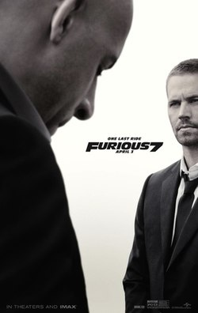

Saga Velozes e Furiosos
The Fast and the Furious (também conhecido como Velozes e Furiosos) é uma franquia de mídia e Universo Compartilhado centrado em uma série de filmes de ação que estão amplamente preocupados com corridas de rua, assaltos, espiões e família. A franquia também inclui curtas-metragens, uma série de televisão, videogames e atrações de parques temáticos. É distribuído pela Universal Pictures.
A série foi bem sucedida comercialmente; A maior franquia da Universal, é a oitava série de filmes de maior bilheteria, com uma receita bruta combinada de mais de US$ 6 bilhões. A recepção crítica para os quatro primeiros filmes foi mista a negativa até o quinto e posteriores filmes, que foram mais mistos a positivamente recebidos. Fora dos filmes, Velozes e Furiosos tem sido o foco de outras mídias, incluindo atrações no Universal Studios Hollywood e Universal Studios Florida, shows ao vivo, comerciais, muitos videogames e brinquedos. É considerado o veículo que impulsionou os atores principais Vin Diesel e Paul Walker ao estrelato.

Filmes
The Fast and the Furious (2001)

O filme é baseado em um artigo, intitulado "Racer X", da revista americana Vibe escrito pelo jornalista Ken Li sobre corridas de rua na cidade de Nova Iorque, embora o filme é definido principalmente em Los Angeles. O filme conta a história de Brian O'Conner (Paul Walker), um policial novato que se infiltra no mundo das corridas ilegais de carros modificados nas ruas de Los Angeles para capturar o responsável por diversos roubos a caminhões nas estradas próximas à cidade. Mas ele acabou se envolvendo de tal modo que acabou por não prender os corredores e logo apaixonando-se por Mia Toretto (Jordana Brewster), irmã de um deles, Dominic Toretto (Vin Diesel), que é o mais famoso e respeitado das ruas, e que namora a bela Letty (Michelle Rodriguez), que além de ser namorada de Dom, também é aliada nos crimes que ele comete.
2 Fast 2 Furious (2003)

O ex-policial Brian O'Conner (Paul Walker) se muda de Los Angeles para Miami para recomeçar sua vida. Ele acaba se envolvendo em rachas na sua nova cidade com seu amigo Tej (Ludacris) e Suki (Devon Aoki). Suas aventuras terminam quando ele é preso e faz um acordo com agentes do FBI. Brian tem a missão muito perigosa de prender um poderoso chefe do cartel das drogas e contará com a ajuda de seu velho amigo Roman Pearce (Tyrese Gibson) e a agente do FBI Mônica Fuentes (Eva Mendes).
The Fast and the Furious: Tokyo Drift (2006)

A história deste filme ocorre em algum momento após Fast & Furious 6, com uma cena que posteriormente foi feita em simultâneo com os eventos de Furious 7. Sean Boswell é um piloto de rua que desafia seu rival e bate o carro no fim da corrida, Então, Sean decide se mudar para o Japão em companhia de seu pai para evitar a prisão nos Estados Unidos, já que os rachas não são nada populares com as autoridades. Em Tóquio, ele começa a aprender um excitante e perigoso estilo novo de competir nas ruas sendo Tachado como gaijin ("estrangeiro"), Sean sente-se como um estranho no Japão. Apesar disto, logo faz amizade com outro estadunidense Twinkie (Bow Bow) além de Earl Hu (Jason Tobin),e Han Lue (Sung Kang) que o introduz no mundo underground do drifting. Só que os riscos ficam ainda mais altos quando Sean decide competir com o campeão local (Brian Tee) e acaba se apaixonando pela namorada dele (Nathalie Kelley).
Fast & Furious (2009)

Na República Dominicana, Dominic Toretto (Vin Diesel), junto da sua namorada Letty (Michelle Rodriguez), continuam na criminalidade junto a sua gangue, praticando diversos atos ilícitos. Mas com o FBI na cola de Dom, ele decide fugir, a fim de proteger sua equipe e sua namorada. Mas após um assassinato ocorrer, supostamente tirando a vida da sua namorada Letty, Dominic volta disposto em busca de vingança, cruzando novamente o caminho do policial Brian O'Conner (Paul Walker).
Fast Five (2011)
O ex-policial e fugitivo da policia norte-americana Brian O'Conner (Paul Walker) firmou uma parceria com o também fugitivo da policia norte-americana Dominic Toretto (Vin Diesel), ambos no lado oposto da lei. Desde que Brian e Mia (Jordana Brewster) tiraram Dom da custódia da polícia, eles vivem atravessando muitas fronteiras para fugir das autoridades. Agora, escondidos em um canto no Rio de Janeiro, eles precisam fazer um último trabalho para ganhar a liberdade. Enquanto montam sua equipe de elite de pilotos de corrida, eles sabem que mesmo se o plano der certo, terão de confrontar um empresário corrupto, que quer vê-los mortos. Mas ele não é o único de seus problemas. O impetuoso agente federal Luke Hobbs (Dwayne Johnson) é enviado para rastrear Dom e Brian, partindo com sua equipe para uma caçada incessante. Enquanto seus homens se infiltram pelo Brasil, Hobbs descobre que é impossível distinguir os mocinhos e bandidos. Agora, ele deve confiar em seus instintos para capturá-los. Após os créditos finais, é mostrada uma cena extra, onde Hobbs está trabalhando em seu escritório quando recebe a visita da velha conhecida, a agente Monica Fuentes (Eva Mendes). Ela chega com um arquivo mostrando um ataque a um comboio militar em Berlim. Hobbs pergunta se é sobre Toretto. Após uma negativa de Fuentes ele mostra seu desinteresse que é facilmente contornado por Monica quando ela o orienta a continuar olhando e é revelada a foto da ex-namorada de Dom e até então falecida Letty Ortiz (Michelle Rodriguez). O filme acaba definitivamente com a pergunta de Fuentes: "Você acredita em fantasmas?", dando assim a prévia do já confirmado Fast & Furious 6. Antes de morrer Vince (Matt Schulze) revela que tinha um filho, Dominic.
Após os eventos de Fast Five, o criminoso profissional Dominic Toretto (Vin Diesel) e sua equipe se tornam ricos, porém, os seus antecedentes criminais os impedem de voltar para seu país de origem. Depois de várias tentativas de capturá-los, o agente Luke Hobbs (Dwayne Johnson) do DSS (Serviço de Segurança Diplomática), oferece a toda equipe um acordo: O DSS vai limpar a ficha criminal de todos da equipe, se a equipe o ajudar a derrubar uma organização criminosa habilidosa e mercenária. Desde o assalto no Rio de Dom e Brian (Paul Walker) que dizimou o império de um chefão e deixou o grupo com US$ 100 milhões, a equipe dividiu-se pelo mundo. Estando sempre em fuga e incapazes de voltar para casa deixou suas vidas incompletas. Enquanto isso, o agente Hobbs tem perseguido por 12 países uma organização de pilotos mercenários habilidosos, cujo chefe Owen Shaw (Luke Evans) é ajudado por uma impiedosa aliada, Letty (Michelle Rodriguez) ex-namorada de Dom que todos achavam que estava morta. A única maneira de impedi-los é vencer esse bando nas ruas, então Hobbs pede que Dom leve sua equipe para Londres. Em troca, promete o perdão que permitiria que todos retornassem para casa.
Furious 7 (2015)
Após os acontecimentos de Fast & Furious 6, Dominic Toretto (Vin Diesel) retorna para a casa ao lado de Letty (Michelle Rodriguez) e toda a sua equipe. Mas a tranquilidade do grupo termina quando Deckard Shaw (Jason Statham), irmão mais velho de Owen Shaw, persegue o grupo a fim de vingar o que fizeram com ele. Agora a equipe precisa se unir mais uma vez para derrotarem essa ameaça. O filme homenageia o ator Paul Walker que interpretou Brian O'Conner na franquia, falecido em 30 de novembro de 2013, bem como retrata sua despedida da saga.
The Fate of the Furious (2017)

O filme surge como uma continuação do sétimo. Nele, Brian (Paul Walker) e Mia (Jordana Brewster) se aposentaram e o resto da equipe foi exonerada. Enquanto isso, Dom (Vin Diesel) e Letty (Michelle Rodriguez) estão em lua de mel e levam uma vida pacata em Cuba, muito diferente da adrenalina das corridas de rua. Entretanto, o surgimento de uma misteriosa mulher (Charlize Theron) faz Dom retornar aos velhos tempos no mundo do crime e da velocidade. Com isso, o seu antigo grupo acaba sendo obrigado a tentar pará-lo.
Fast & Furious Presents: Hobbs & Shaw (2019)
Rivais declarados, Luke Hobbs (Dwayne Johnson) e Deckard Shaw (Jason Statham) se veem forçados a trabalharem juntos novamente. Eles se unirão para combater uma ameaça biológica que pode mudar toda a humanidade que está nos planos de Brixton (Idris Elba), um líder terrorista. Além disso, ambos terão de enfrentar o personagem que é geneticamente alterado e mais forte que os dois.
F9 (2021)
Dominic Toretto e Letty vivem uma vida pacata ao lado do filho. Mas eles logo são ameaçados pelo passado de Dom: seu irmão desaparecido Jakob (John Cena), que retorna e está trabalhando ao lado de Cipher. Cabe a Dom reunir a equipe novamente para enfrentá-los. O filme se passa dois anos após os eventos de The Fate of the Furious (2017) e cerca de 6 meses após Hobbs & Shaw (2019C. Jason Statham aparece como Deckard Shaw na cena pós-créditos, enquanto Jordana Brewster retorna à franquia em seu papel de Mia Toretto, junto com Sung Kang como Han Lue, que se revela vivo, e Lucas Black como Sean Boswell. Shad Moss e Jason Tobin reprisam seus papéis como Twinkie e Earl Hu, respectivamente, de The Fast and the Furious: Tokyo Drift (2006).
Fast X (2023)
Para o décimo filme, Jason Momoa se juntou ao elenco em um papel de vilão[44], ao lado de Daniela Melchior[45], Alan Ritchson[46] e Brie Larson[47] em papéis não revelados, e Rita Moreno[48] foi escalada como avó da família Toretto O filme está programado para ser lançado em 19 de Maio de 2023.[49] Em 20 de Abril de 2022, foi revelado que o filme foi intitulado Fast X quando as filmagens começaram.[50]